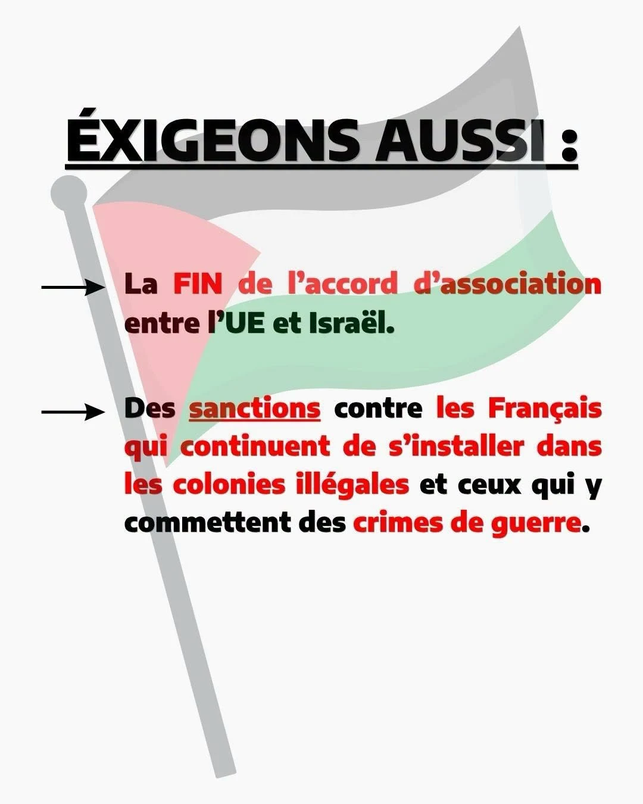

Publication relayée par le PCF 79
Ian Brossat sur les sanctions contre les colonies israéliennes
Date de mise à jour indiquée par Facebook · 8 septembre 2026
Texte de la publication · Ian Brossat
Mieux vaut tard que jamais !
Douze pays, dont la France, mettent fin au commerce avec les colonies illégales israéliennes situées dans les Territoires Palestiniens Occupés.
Il faut maintenant aller plus loin : mettre fin à l’accord d’association entre l’Union européenne et Israël, sanctionner nos compatriotes qui s’installent dans les colonies et commettent des crimes de guerre. La Palestine doit vivre 🇵🇸
Repères éditoriaux
Nous avons relayé la prise de position d’Ian Brossat sur les mesures commerciales visant les colonies israéliennes. Dans sa publication, il demande d’aller plus loin et de mettre fin à l’accord d’association entre l’Union européenne et Israël.

Sources
Ian Brossat · publication relayée par le PCF 79 · fil Facebook · AR-0002-FB-00695
À lire aussi · « Stop à l’armement du génocide palestinien ! » Le texte du PCF